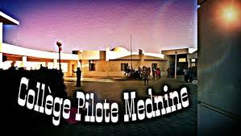
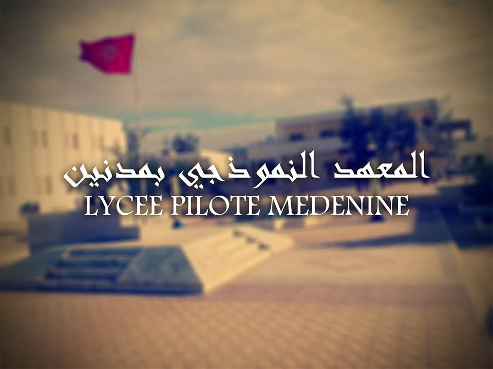
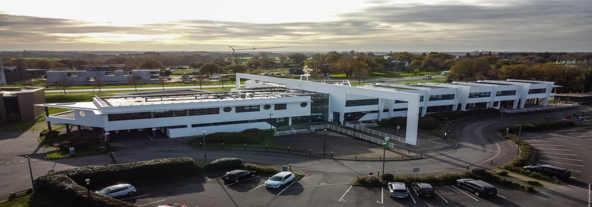

éleve chez collège pilote de medenine
éleve chez lycée pilote de medenine
étudiant en ingénierie informatique chez l'ENSIBS
Mon parcours est marqué par une progression constante, guidée par la curiosité et la volonté de viser toujours plus haut. J’ai commencé au Collège Pilote de Médenine, un environnement exigeant qui m’a permis de construire des bases solides et une discipline de travail rigoureuse. J’ai ensuite poursuivi au Lycée Pilote de Médenine, où j’ai affiné mes méthodes, renforcé mes ambitions et découvert un véritable intérêt pour les sciences et le numérique. Cette trajectoire m’a naturellement conduit vers l’ingénierie informatique, un domaine où je peux combiner logique, créativité et innovation. Intégrer l’ENSIBS représente pour moi une nouvelle étape, un espace où je peux transformer mes idées en projets concrets et me préparer à une carrière tournée vers la technologie et l’avenir. Chaque phase de ce parcours n’est pas seulement un passage, mais une construction progressive de la personne et de l’ingénieur que je deviens.
Le Collège Pilote de Médenine est un établissement d’excellence qui offre un environnement éducatif stimulant et rigoureux. Il se distingue par son engagement à fournir une éducation de qualité, axée sur le développement intellectuel et personnel des élèves. Le collège propose un programme académique enrichi, des activités parascolaires variées et un encadrement attentif, favorisant ainsi l’épanouissement des élèves et leur préparation aux défis futurs.

Le Lycée Pilote de Médenine est un établissement d’enseignement secondaire réputé pour son excellence académique et son engagement envers la réussite de ses élèves. Il offre un programme éducatif rigoureux, combinant des cours théoriques approfondis avec des activités pratiques et des projets innovants. Le lycée met l’accent sur le développement des compétences critiques, la créativité et l’esprit d’initiative, préparant ainsi les élèves à exceller dans leurs études supérieures et à relever les défis du monde moderne.

L’ENSIBS, ou École Nationale Supérieure d’Ingénierie en bretagne sud , est une institution de renom dédiée à la formation d’ingénieurs compétents et innovants dans le domaine de l’informatique. L’école propose un programme académique rigoureux, combinant des cours théoriques approfondis avec des projets pratiques et des stages en entreprise. L’ENSIBS met l’accent sur le développement des compétences techniques, la créativité et l’esprit d’innovation, préparant ainsi ses étudiants à exceller dans le secteur dynamique de l’informatique et à contribuer de manière significative à l’évolution technologique.
